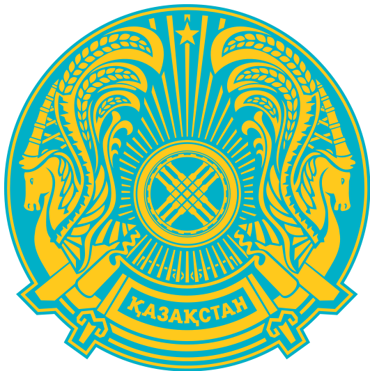

ГКП "Городская поликлиника №3" на ПХВ
ГКП "Городская поликлиника №3" на ПХВ
Оффициальный сайт учреждения
График работы
| № каб. | № учаске/ участок | ТАӘ/ФИО | Мекен-жай/адрес | Қабылдау күндері/дни приема | ||||
|---|---|---|---|---|---|---|---|---|
| Мекен-жай/адрес | дүйсенбі/ понедельник | сейсенбі/вторник | сәрсенбі/среда | бейсенбі/четверг | жұма/ пятница | |||
| 109 | 3 | Кулгазиева Амансулу Дуйсеновна м/с: Успанова Рая м/с: Тукибаева Майра | 12мкр - 15,16, 16а,16г,16ж,16и, 20, 21,21-1,21в,д,г,е,24а,д,25,26,28,30д | 16.00 — 20.00 | 08.00 — 12.00 | 12.00 — 16.00 | 08.00 — 12.00 | 16.00 — 20.00 |
| 109 | 9 | Аккуатова Гулбакыт Маратовна м/с: Улмагамбетова Айгерим м/с: Утегенова Гульжан | 12мкр-30,37а,37д, 38а,38б,39,41,42,43,43а,49 | 12.00 — 16.00 | 16.00 — 20.00 | 08.00 — 12.00 | 16.00 — 20.00 | 08.00 — 12.00 |
| 109 | 42 | Ахметова Айсулу Аскаровна м/с: Куанова Сауле | 12мкр -51, Иманова 76-150,91-179 Д.Беркімбай көшесі -93-171, 102-178, С.Разина 83-141, 72-152, Мөңке би – 99-171, 96-172, Әжібай би – 3-39, 4-58, Білтабан көш. – 1-51, 2-52, Бақтыбай батыр – 3-45,4-42, С.Сейфуллин – 51-121,50-124, Павлова 67-127,78-146, Москва көш.71-129,74-152, Ақтау көш.- 1-17,2-20, Крылова -1-7,2-8, С.Жаманкулова 65-69,12-88, Вокзал көшесі -1-43 Мясоедов көш.-68-174 П.Морозов көш. – 2-18 Қ.Рысқұлбеков(1905ж) – 6-28 Н.Кооперативный -1-9 З.Космедемяская – 1-31 Черепанов көш. – 38 Иманов көш.-85/5,48 Садовая көш. - 32 | 08.00 — 12.00 | 12.00 — 16.00 | 16.00 — 20.00 | 12.00 — 16.00 | 12.00 — 16.00 |
| 112 | 7 | Абенова Нуржамал Туркпеншиевна м/с Байделдина Айзат м/с: Тенелова Аида | 12мкр- 12Б част.сектор, 22,22-1,32,32/1,32/3, 52, Бокенб.бат-66 | 16.00 — 20.00 | 08.00 — 12.00 | 16.00 — 20.00 | 08.00 — 12.00 | 12.00 — 16.00 |
| 112 | 4 | Ишниязова Нурбану Изимгалиевна м/с: Рахимова Акбобек м/с: Жолдаева Шолпан | 11мкр-76,77,79,80,81,82,83,110,111, 112а,б,в,114,115 (шайкен-2,4) | 12:00 — 16-00 | 16:00 — 20:00 | 08:00 — 12:00 | 12.00 — 16.00 | 08.00 — 12.00 |
| 112 | 43 | Абылайхан Шарбат Абылайхановна м/с Есмагамбетова Гулнур | Локомотивная 7 кв 1-90, Локомотивная 1-29,2-18,Павлова 129-149, 148-168 Вагонная 2-16,1-17, Менделеева 1-51,2-56 Вокзальная 2-24, Московская 74-182,131-185, пер.москов-я, Станционная 1-29, Станционная 31-33, ЖД-53-4 Актау 19-59,22-62, Зоя Космодемянская 2-44, Новокооперативная 11-53, Крылова 9-59,10-52, пер.Дальный, Иманова -152-190, Бауманова 2-24, | 08.00 — 12.00 | 12.00 — 16.00 | 16.00 — 20.00 | 16.00 — 20.00 | 16.00 — 20.00 |
| 107 | 2 | Ажигалиева Айжан Мухамбетовна м/с Жумабек Кундыз | с/к Лесной, Ромашка, Актюб сельмаш10,11,Устаз, Айболит, Учитель,Ветеран, Энергоуч. Дидар-рассвет, Педагог, Наука, Техник, Актюбжилстрой, Алмабагы,Саябак, Радист, Энергетик -3, Гулдер,Домбра, Рябинушка,Педагог,УВД-2,Светлый сад,Силикатчик. | 12:00 — 16:00 | 12:00 — 16:00 | 08:00 — 12:00 | 16.00 — 20.00 | 08:00 — 12:00 |
| 107 | 33 | Кострова Людмила Владимировна отпуск с 15.05.23 м/с: Юсупова Бибигуль | Орал көш.- 2-16, П.Коммуна көш. – 2-18,1-17, Мясоедова- 2-66,1,7,25,45,39, С.Разина - 2-70-1-77, Беркімбаева көш.-2-94,1-81, Мөңке би – 2-94,1-97, Черепанов көш.-14-74,7-23, Д.Бедный көш. -8-56,5-61, Пушкин көш. -8-60,9-51, Арынов көш.-12-42,7-35, Илецкий көш. – 2-76 Пер.Илецкий -3,5,7,13,42,Пер. Ср.Малый көшесі, Бау-бақша көш.-8-44,13-69, Қ.Рысқұлбеков көш.-9-59, Иманова 2-74,1-87, Красный-2-48,1-49, Москва көш.-2-72,1-69, Павлова -2-76,5-65 ЖД -36-42,37-41, Жаманкулов көш.-33-65 | 08:00 — 12:00 | 16:00 — 20:00 | 12:00 — 16:00 | 12:00 — 16:00 | 16:00 — 20:00 |
| 107 | 39 | Казбаева Гулдана Максотовна м/с: Рахметова Алия м/с: Кусаинова Гульжайна | 11 мкр - 3а.б,3в,г, 8,9,10,11,12,13,14,16,19,21,23,24,25,27,28,31,32, (Шайкенова 9,11,13,13а, Аз-Наурыз -2,6,8) | 16:00 — 20-00 | 08:00 — 12:00 | 12:00 — 16:00 | 12:00 — 16:00 | 12:00 — 16:00 |
| 110 | 5 | Джантулеева Назира Тургалиевна м/с: Избасова Гульшат м/с: Кушекова Нургуль | 12мкр- 53,54,58, 58/2,58/3,60,62,63,65 | 16:00 — 20:00 | 08:00 — 12:00 | 12:00 — 16:00 | 12:00 — 16:00 | 12:00 — 16:00 |
| 110 | 8 | Айтжанова Ботагоз Шакизадаевна м/с: Нугманова Жанна | 11мкр-85,85в,87,88,89,100,101, 103,105,106,144а,б, (Шайкенова-8,10,12,Аз-наурыз 32) | 08.00 — 12.00 | 12.00 — 16.00 | 16.00 — 20.00 | 08.00 — 12.00 | 12:00 — 16:00 |
| 110 | 1 | Кожаева Айсулу Кобландыковна м/с: Алдембергенова Инкар м/с: Тусулбаева Жанель | 11 мкр -33,34,35,36,37,37а,38,39,41,41г,42,43, 44,47,51,52,92,94,95,96,99 (Шайкенова.16,17,18,20,21) (аз-Наурыз 20,24) | 12.00 — 16.00 | 16.00 — 20.00 | 08.00 — 12.00 | 12:00 — 16:00 | 08.00 — 12.00 |
| 108 | 6 | Кабделова Замира Базаровна м/с: Идирис Гулмарал м/с: Байтасова Аружан | 12 мкр - 17,18,19,45,50,50б,64 | 12.00 — 16.00 | 08.00 — 12.00 | 16.00 — 20.00 | 12:00 — 16:00 | 12:00 — 16:00 |
Блог главного врача
| ‹ | › | |||||
| Пн | Вт | Ср | Чт | Пт | Сб | Вс |